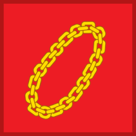

Setiap negara mempunyai dasar negaranya masing-masing, sebagai contohnya Indonesia dengan Pancasila.
Pancasila di jadikan pedoman negara untuk menjalankan kehidupan berbangsa dan bernegara.Namun sebenarnya apa pengertian dasar negara?
Untuk lebih jelasnya, simak penjelasan mengenai dasar negara serta fungsi dari Pancasila berikut ini.
ketuhanan yang maha esa
sila pertama ini merupakan sila yang mengikat seluruh umat beragama yang berarti setiap individu yang
ada di dalam negar indonesia harus memiliki agama yang berketuhanan yang maha esa.
sila ketuhanan yang maha esa ini di jadikan sila yang pertama karena negara kita sebagai
negara yang memegang teguh bahwasanya tuhanlah yang memiliki kekuatan diatas segalanya.

kemanusiaan yang adil dan beradap
Rantai pada simbol kedua terdiri atas mata rantai yang berbentuk segi empat dan lingkaran yang saling berkaitan membentuk lingkaran.
Keterkaitan itu bermakna bahwa bangsa Indonesia saling terkait erat, saling bahu membahu, dan saling membutuhkan.
persatuan indonesia
Pohon beringin digambarkan sebagai Negara Indonesia, di mana semua rakyat Indonesia dapat 'berteduh' di bawah Negara Indonesia.
Pohon beringin yang bersifat menjalar ke segala arah dikorelasikan dengan keragaman suku bangsa yang menyatu di bawah nama Indonesia.
kemanusiaan yang adil dan beradap
Kepala banteng memiliki filosofi sebagai hewan sosial yang suka berkumpul, seperti halnya musyawarah, di mana
orang-orang berdiskusi untuk melahirkan suatu keputusan.
keadilan sosial bagi seluruh rakyat indonesia
Padi dan kapas merupakan simbol pangan dan sandang yang menyiratkan makna bahwa syarat utama negara yang
adil adalah bisa mencapai kemakmuran untuk rakyatnya secara merata.
Pengertian dasar negara
Merujuk buku Pendidikan Kewarganegaraan untuk SMA/MA Kelas X oleh Titik Sumarni dan Joko Mumpuni, dasar negara adalah ajaran atau
teori berupa hasil pemikiran mendalam tentang dunia dan kehidupan.Dasar negara merupakan pedoman dasar yang mengatur dan
memelihara kehidupan bersama dalam sebuah negara. Apabila sebuah negara tidak memiliki dasar maka dapat dikatakan bahwa
negara tersebut tidak memiliki tujuan yang jelas dan tepat dalam membangun sebuah negara. Sementara itu, dikutip dari buku Mengena
l Ideologi Negara (2020), dasar negara berperan penting dalam kehidupan ketatanegaraan. Dasar negara juga berfungsi sebagai dasar
berdirinya suatu negara.

.png)
.png)
.jpeg) Merujuk buku Pendidikan Kewarganegaraan untuk SMA/MA Kelas X oleh Titik Sumarni dan Joko Mumpuni, dasar negara adalah ajaran atau
teori berupa hasil pemikiran mendalam tentang dunia dan kehidupan.Dasar negara merupakan pedoman dasar yang mengatur dan
memelihara kehidupan bersama dalam sebuah negara. Apabila sebuah negara tidak memiliki dasar maka dapat dikatakan bahwa
negara tersebut tidak memiliki tujuan yang jelas dan tepat dalam membangun sebuah negara. Sementara itu, dikutip dari buku Mengena
l Ideologi Negara (2020), dasar negara berperan penting dalam kehidupan ketatanegaraan. Dasar negara juga berfungsi sebagai dasar
berdirinya suatu negara.
Merujuk buku Pendidikan Kewarganegaraan untuk SMA/MA Kelas X oleh Titik Sumarni dan Joko Mumpuni, dasar negara adalah ajaran atau
teori berupa hasil pemikiran mendalam tentang dunia dan kehidupan.Dasar negara merupakan pedoman dasar yang mengatur dan
memelihara kehidupan bersama dalam sebuah negara. Apabila sebuah negara tidak memiliki dasar maka dapat dikatakan bahwa
negara tersebut tidak memiliki tujuan yang jelas dan tepat dalam membangun sebuah negara. Sementara itu, dikutip dari buku Mengena
l Ideologi Negara (2020), dasar negara berperan penting dalam kehidupan ketatanegaraan. Dasar negara juga berfungsi sebagai dasar
berdirinya suatu negara.